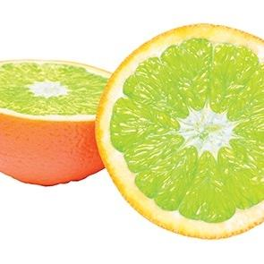

The first oranges weren't orange
The original oranges from Southeast Asia were a tangerine-pomelo hybrid, and they were actually green.
In fact, oranges in warmer regions like Vietnam and Thailand still stay green through maturity.
This website will have some surprising facts about oranges.